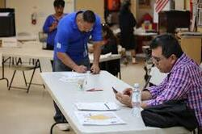
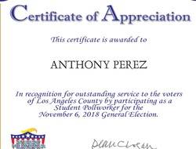
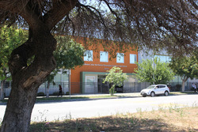
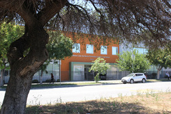

Anthony Perez
My name is Anthony Perez and this is my website. I am currently a freshman attending the University Of California, Riverside, and am an undeclared major. When I was young I helped my father with his business that he ran. It regarded renting out chairs and tables to customers. This job was one that taught me a lot of things that I continued to use in my lifetime. I was very interested in this idea of business and plan to do something in my life focused around it. In high school, I was able to join a club and show off my skills as a leader because I worked hard to get my club money for a trip that we were going to. I was also able to showcase some Business skills in marketing when it came to promoting and selling. I was very capable of displaying what we were selling and getting consumers interested in buying it. Through High School, I continued to achieve great things being ranked 25 out of all my classes. I was also able to acquire multiple awards like a student of the month and other awards.
Once I started college I had to acquire a job because I needed money for expenses. I started off applying to a job and didn’t get the job because there were already people who got the job because they applied first. I didn’t lose hope and stayed determined. I made sure to learn more about how I could get a job. I looked around every couple of days and stayed on top of it making sure that I could be hired. I learned about a new place opening up and knew that they would need workers so I found out where I could get an application. I signed up and quickly realized that it’s not that simple after applying I had to go through a phone call interview. I was able to not make mistakes and did perfectly to get me into an in-person interview. This in-person interview was my very first so I already felt nervous.
I put away my fears to make sure it didn’t interfere with me getting the job because of nervousness. I made sure to get prepared and take everything I needed like paperwork. I also dressed professionally and made sure to arrive early so they can know that I am serious about getting the job. When it came to the in-person interview I was interviewed by two employers and was at a table with another person who wanted the job. It was something different I didn’t know I would be in an interview with another person at the same time. I remained professional and respectful allowing the person to speak yet still made great responses to all the interview questions. Furthermore, in the end, they asked if we had any questions, and based on the job I was getting I asked questions. These questions related to the job but also related to the people I was asking. This showed how I am a friendly person who wanted to know more about them and the job. I soon got a call letting me know that I did get the job. I was able to use my knowledge in helping me acquire a job at The Barn, a dining service. I am someone who pushes myself to do better and overall a hard worker. I am someone who gets tasks done and continues to aspire to become someone successful in life.
Experience
Student Poll Worker
• A clerk who inputted the ballots into the ballot machine
• Helped voters who had questions
• Learned how to work with others and communicate with people
Employee/Worker
• Took tables/chairs to customer’s homes and charged them.
• Learned how to think critically as well as social skills
• Learned how to handle money
Translator at School
• Translated for teacher's during parent conference
• Learned how to communicate and social skills
Education
University of California Riverside
Portfolio




